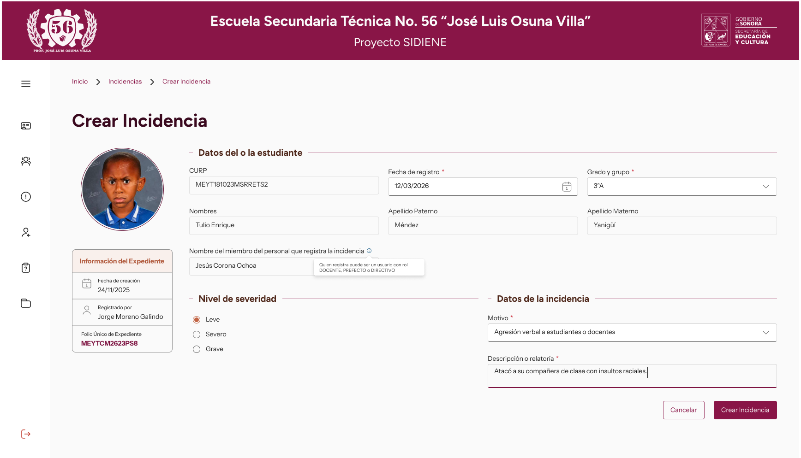

1. Contexto y Problema
A principios de 2024 se atendieron diversas entrevistas con directivos y personal del Departamento de
Servicios Educativos Complementarios con enfoque en gestionar incidencias y expedientes de manera
física. Empecé a desarrollar una solución basada en software en equipo como un sistema de administración
y gestión inspirado en otros sistemas burocráticos (y actualmente descontinuados) como SICRES, pero
adecuándolo a las necesidades recolectadas durante las entrevistas.
Entre los principales pain points de los Prefectos y Directivos destacan el acceso por horario a
los expedientes físicos y la estructura no estandarizada de los mismos.
"Ocupo algo a lo que pueda acceder para descargar el expediente de los estudiantes y enviarlos a mis
superiores de manera inmediata."
2. Investigación y Descubrimientos
En base a los datos de la institución, tracé el User Journey de un prefecto escolar. Se mostró que
al menos 30 minutos de su jornada eran usados en realizar correcciones de incidencias escritas por parte
de los docentes. Igualmente, los roles implicados dentro de esta solución se ampliaron de Directivos y
Prefectos a incluir al Trabajador Social y a los Docentes.
Se estandarizaron los términos "Reporte" y "Expediente" por "Incidencia" y "Expediente Único de
Incidencias" respectivamente. Esto se hizo ya que el término "Reporte" se usa en el desarrollo como un
sinónimo de historial, mientras que en el sector educativo se refiere a un archivo que detalla una
indisciplina con su nivel de severidad y la relatoría de la misma.
3. Sistema de Diseño e Identidad
Implementé un sistema de diseño basado en los colores institucionales detallados en el Manual de
Identidad del Gobierno del Estado de Sonora. Esto, aunado al proceso de digitalización de los trámites y
acciones burocráticas, mostró potencial para una mejor asimilación por parte del público meta.
Se validó el contraste de los colores institucionales bajo el estándar WCAG 2.1 AA para prevenir fatiga
visual en los docentes, garantizando que el sistema sea accesible y cómodo para un uso prolongado
durante la jornada escolar.
En el diseño tipográfico, se optó por fuentes sans-serif para mantener una imagen formal y
legible. Se pensó en Montserrat como fuente principal, pero se descartó para evitar confusiones de
identidad, ya que el Gobierno Federal hace uso de esta, mientras que la institución educativa es de
carácter Estatal.
Tipografías
Instrument Sans
Aa Bb
Cc Dd Ee Ff Gg
0 1 2
3 4 5 6 7 8 9
Figtree
Aa Bb Cc Dd
Ee Ff Gg
0 1 2 3 4 5 6
7 8 9
4. El Antes y el Después
El contraste visual y de arquitectura de la información entre la versión del 2024, 2025 y el nuevo
rediseño evidencia una optimización directa en la reducción de carga cognitiva para el usuario. Se tomó
como un proceso iterativo para diversas materias dentro de la Ingeniería y se centró en un subcaso de
uso dentro de "Gestionar Incidencias".
 V1 (2024)
V1 (2024)
 V2 (2025)
V2 (2025)

Diseño Final
5. Resultados y Próximos Pasos
El rediseño logró reducir la carga visual de los formularios, actualmente se encuentra en proceso de
desarrollo de los flujos completos del software.